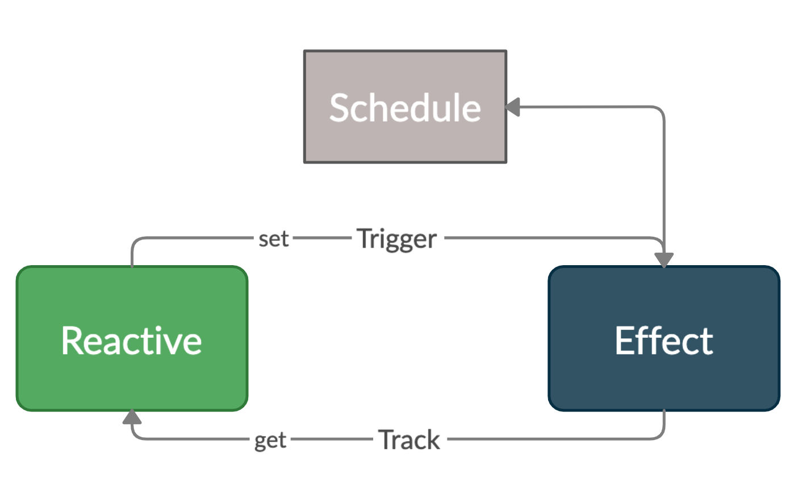
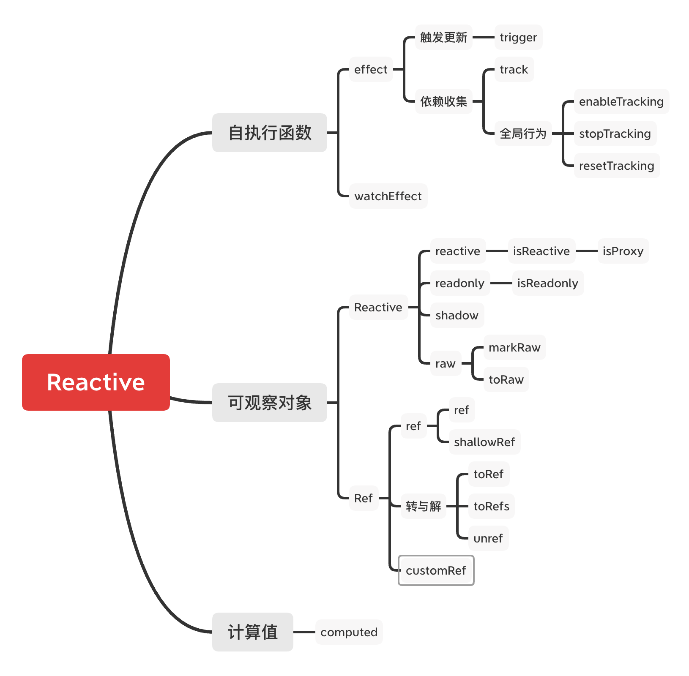

于明昊
export default {
data: { name: 'Malcolm' },
computed: {
text() { return 'Hello ' + this.name }
},
watch: {
'name': function() { console.log('name changed') }
},
render(h) { h('div', this.text) }
}
export default {
data: { name: 'Malcolm' },
computed: {
text() { return 'Hello ' + this.name }
},
watch: {
'name': function() { console.log('name changed') }
},
render(h) { h('div', this.text) }
}
export default {
data: { name: 'Malcolm' },
computed: {
text() { return 'Hello ' + this.name }
},
watch: {
'name': function() { console.log('name changed') }
},
render(h) { h('div', this.text) }
}

四个核心模块

const obj = { foo: 1 }
effect(() => {
console.log(obj.foo)
track(obj, TrackOpTypes.GET, 'foo')
})
obj.foo = 2
trigger(obj, TriggerOpTypes.SET, 'foo')
let shouldTrack = true
const trackStack: boolean[] = []
export function pauseTracking() {
trackStack.push(shouldTrack)
shouldTrack = false
}
export function enableTracking() {
trackStack.push(shouldTrack)
shouldTrack = true
}
export function resetTracking() {
const last = trackStack.pop()
shouldTrack = last === undefined ? true : last
}
export interface ReactiveEffectOptions {
lazy?: boolean
scheduler?: (job: ReactiveEffect) => void
onTrack?: (event: DebuggerEvent) => void
onTrigger?: (event: DebuggerEvent) => void
onStop?: () => void
}
↑ 重点说一下 onSchedule
const obj = reactive({ a: 1 });
new Vue({
setup() {
effect(() => console.log(obj.a));
watchEffect(() => console.log(obj.a));
}
});
- EOF -